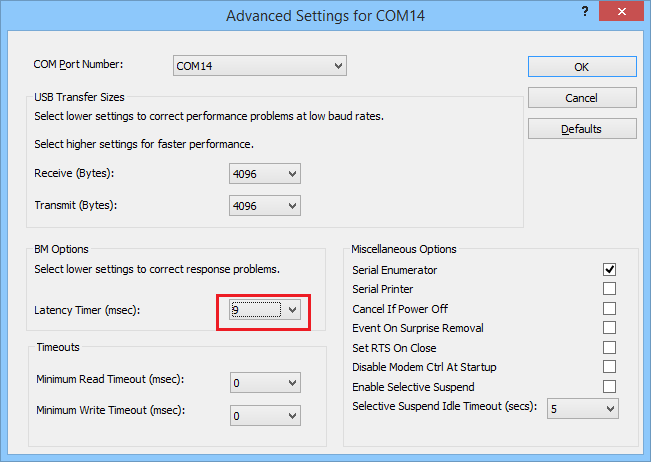

2. Getting Started¶
2.1. Scope¶
SmartSnippets™ Toolbox is provided with the Development Kit of Renesas’s Bluetooth chipset. It is targeting the main activities of programming and optimizing code for best power performance. It enables:
- programming the OTP and Flash memories with the actual application compiled image
- accurate examination of the power profile and how it is affected by application software
- downloading a SW image to SRAM and execute
The SmartSnippets™ Toolbox makes maximum use of the available features on the motherboard and thus allowing developers of Bluetooth smart applications to work without expensive and bulky equipment. The tool will provide full visibility on the chip activity, which is crucial in developing ultra low power wireless applications.
2.2. Work Flow¶
This section is providing a guide to start using the SmartSnippets™ Toolbox, a proposed way of working with the tools available for the basic tasks during development. The following figure illustrates the basic flow to run a program from OTP on a DA1453x and DA14585/6 family chip.
Figure 2 Develop and run a program from OTP for DA1453x, DA14585/6
[1] Renesas’s Development Board needs no configuration
[2] From this point on, application development and debugging is done, and OTP will be programmed
The user might experiment with the Power Profiler for optimizing the code as much as possible. This can take several iterations since the user can insert SW cursors (see Power Profiler software cursors ) to identify the code executions translated into current dissipation. As soon as it is completed, the programming of the code into the OTP might start so that the system is self-sustained. Upon OTP burning, the system can operate on a battery and realize complete power cycles e.g. active and sleep intervals. Please refer to Power Profiler about a detailed description of Power Profiler.
2.3. Device Selection¶
The first time SmartSnippets™ Toolbox is launched on a clean workspace the user will see the following:
Figure 3 Application window when device is unknown
At this point the target device is still unknown. No tools will be available until a device is selected or detected. The application has been launched with a default project (named ‘Default’) at which user settings will be saved. User can either use this default project or create a new project using the Project menu. Then the user is advised to either select Detect Device from the Board Menu or to manually select the device and the interfaces to be used from the Board Menu. Once a device is detected or manually selected the groups of tools supported for this device will be loaded at the ribbon.
SmartSnippets™ Toolbox saves user configurations (selected device, communication interfaces, tool specific settings) at the active project. If there any unsaved changes on application exit or when user switches to another project the user will be asked to save these changes. SmartSnippets™ Toolbox remembers the project that has been used in the last session and it will load by default the same project the next time the application is launched.
2.4. UART Port Configuration¶
If the connection between SmartSnippets™ and the board over the UART link is unstable try to change the latency time of the FTDI cable and set to some value below 10ms. User can configure the latency from the Device Manager. To open the Device Manager in Windows 10, the user can press the Windows button and type Device Manager in the search box. From the Device Manager expand Ports (COM & LPT). Right click on preferred port, click properties, select tab Port Settings and then advanced. In windows 8 COM & LPT is hidden. Go to View and select Show hidden devices. At Figure 4 you can see a screenshot of example settings.
Figure 4 Advanced settings for COM port
2.5. Availability of functions per board¶
| Function | DA14580/581/583 | DA14585/6 | DA1453x | DA1459x | DA1468x | DA1469x | DA1470x |
|---|---|---|---|---|---|---|---|
| Flash Code | Available | Available | Available | Available | Available | Available | Available |
| OTP | Available | Available | Available | Available | Available | Available | Available |
| RAM | Available | Available | Available | Available | Available | Available | Available |
| Flash Data | Available | Available | Available | Available | Available | Available | Available |
| SUOTA | N/A | N/A | N/A | Available | N/A | Available | Available |
| EEPROM Programmer | Available | Available | Available | N/A | N/A | N/A | N/A |
| QSPI Partition Table | N/A | N/A | N/A | Available | Available | Available | Available |
| Proprietary Header Programmer | Available | Available | Available | N/A | N/A | N/A | N/A |
| RF Master | Available | Available | Available | Available | Available | Available | Available |
| XTAL Manager | Available | Available | Available | Available | Available | Available | Available |
| Registers Access | N/A | N/A | N/A | Available | N/A | Available | Available |
| IO Manager | N/A | N/A | N/A | Available | N/A | Available | Available |
| UART Terminal | Available | Available | Available | Available | Available | Available | Available |
| Terminal Scripting | Available | Available | Available | Available | Available | Available | Available |
| Graphics FPS Estimator | N/A | N/A | N/A | N/A | N/A | N/A | Available |
| Sleep Mode Advisor | Available | N/A | N/A | N/A | N/A | N/A | N/A |
| OTA Services (over the air services) | Only for DA14580 | N/A | N/A | N/A | N/A | N/A | N/A |
| Data Rate Monitor | Available | N/A | N/A | N/A | N/A | N/A | N/A |
| Power Profiler | Available | Available | Available | Available | Available | Available | Available |
| Log | Available | Available | Available | Available | Available | Available | Available |
| Battery Lifetime Estimator | Available | Available | Available | N/A | N/A | N/A | N/A |
| Board Setup Configurator | Available | Available | Available | N/A | N/A | N/A | N/A |